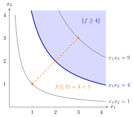

Quasi-Concave Function¶
Definition¶
Let be a convex set and let . The function is quasi-concave if the superlevel set
is convex for every .
Equivalently, for all and every . Since , the function is quasi-concave if and only if is quasi-convex.
Interpretation¶
A quasi-concave function has convex superlevel sets: for every level , the points where is at least form a convex region. Along any segment its values never fall below the smaller endpoint value, so the graph has no dip in the middle of a segment.

The figure is Example 2 below, on , drawn through its level curves , and . The superlevel set , shaded, is the region on and above the hyperbola , a convex set; every level behaves the same way, so is quasi-concave. On the diagonal, is the midpoint of and , yet is less than the average of and , so is not concave.
Everything mirrors the quasi-convex case. Every concave function is quasi-concave, because its superlevel sets are convex, but not conversely: the product on the positive quadrant is quasi-concave without being concave (Example 2 below). A minimum of quasi-concave functions is quasi-concave, and a monotone function on an interval is both quasi-convex and quasi-concave. In economics, quasi-concavity of a utility function means exactly that the bundles at least as good as a given bundle form a convex set.
A test with strict local extrema combines both notions. A locally strict maximum rules out quasi-convexity: two nearby points on opposite sides have lower values than their midpoint. Symmetrically, a locally strict minimum rules out quasi-concavity. A function with both is therefore neither. Each hypothesis matters. With only a strict maximum, as for , the function can still be quasi-concave. The domain must be open: on the function has a locally strict minimum at and a locally strict maximum at when local extrema on a non-open domain are defined with balls intersected with the domain, yet it is both quasi-convex and quasi-concave (Example 4 below).
A common misconception is that "quasi-concave" is just a looser word for concave; the superlevel-set condition says nothing about curvature.
Key Results¶
- is quasi-concave if and only if for all and , and if and only if is quasi-convex.
- Every concave function is quasi-concave; the converse is false.
- If are quasi-concave on , then is quasi-concave.
- If is open and convex and has both a locally strict maximum and a locally strict minimum, then is neither quasi-convex nor quasi-concave.
- On an interval , every monotone function is both quasi-convex and quasi-concave.
Examples¶
1. A ridge. Let on . For the superlevel set is the strip , and for it is empty; so is quasi-concave. It is not quasi-convex: is the union of two half-planes, and the midpoint of and is missing. The test with strict local extrema (fourth Key Result) does not apply here, because the maxima along the line are not strict: for every .
2. Quasi-concave but not concave. Let on . For the superlevel set is all of . For it is , the epigraph of the convex function on , hence convex. So is quasi-concave. It is not concave: is smaller than the average of and .
3. Neither. The function on the open domain has and , so it has a locally strict maximum and a locally strict minimum . Accordingly, and are both not convex.
4. Why the domain must be open. Let on . For not open the definitions of local extrema use instead of the ball , so has a locally strict minimum at and a locally strict maximum at . Yet is affine, hence convex and concave, hence quasi-convex and quasi-concave. The test with strict local extrema does not apply because is not open.
Prerequisites¶
Related Concepts¶
- Hypograph
- Operations Preserving Convexity of Functions
- Convex and Concave Functions on
- Monotone Function
- Level Set and Level Curve
Sources¶
- Math VI: Convexity and Optimization · Week 1
- H. E. Nusse and M. Dienstknecht, Math VI: Convexity and Optimization, lecture notes 2026–2027, Section 1.3
Aliases: quasiconcave function, quasi-concavity, quasiconcavity Keywords: {\boldsymbol{x}\in D\colon f(\boldsymbol{x})\geq\alpha}\text{ convex for every }\alpha\in\mathbb{R}, f(\lambda\boldsymbol{a}+(1-\lambda)\boldsymbol{b})\geq\min{f(\boldsymbol{a}),f(\boldsymbol{b})}, m_f(\boldsymbol{x})=\min{f_k(\boldsymbol{x})\colon k=1,\dots,N}, convex superlevel sets, locally strict maximum and minimum, neither quasi-convex nor quasi-concave Symbols: alpha, element of, epsilon, infinity, intersection, lambda, real numbers, square root, subset, union
Last updated: 5 November 2026 12:47
Quasi-Concave FunctionQuasi-Convex FunctionSublevel Sets of Convex FunctionsLocal Maximum and Minimum on \(\mathbb{R}^n\)HypographOperations Preserving Convexity of FunctionsConvex and Concave Functions on R^nMonotone FunctionLevel Set and Level Curve